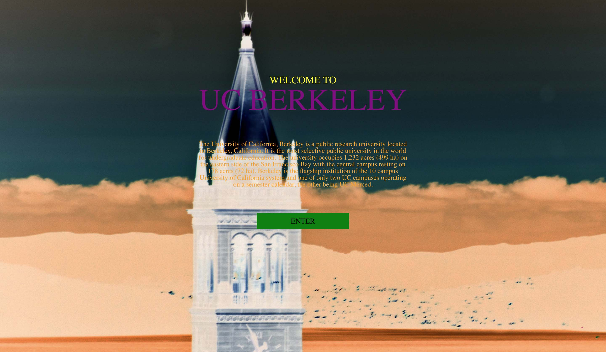

Web Design DeCal
Hands-on 6
March 10th
Color
Required Tools: Google Chrome, Internet, a text editor, and maybe Photoshop
This website is really ugly. Make it beautiful!
Assignment
Apply some of the color theories you learned in today's lecture and make this website beautiful!
If your open your starter.html, you should have something like this:
Instructions
Disgusting, right? Fix this up by changing up the colors, the fonts, and even the background image if you feel lke it.
You can change and add to everything in the .css file, but nothing in the .html file (but feel free to change the background image).
Some properties that you might find helpful:
- letter-spacing
- opacity
- filter
-webkit-filter-
-moz-filter
(click here for more info)
Hint: You might want to change or remove the current filter on the background image - text-shadow or box-shadow
After you're done, post a picture (take a screenshot) of your new and improved site and write a short description explaining your design choices at bit.ly/wddstudent!